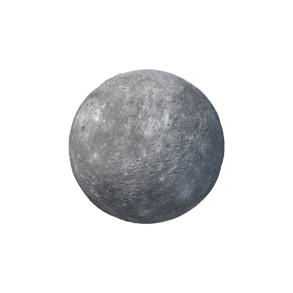
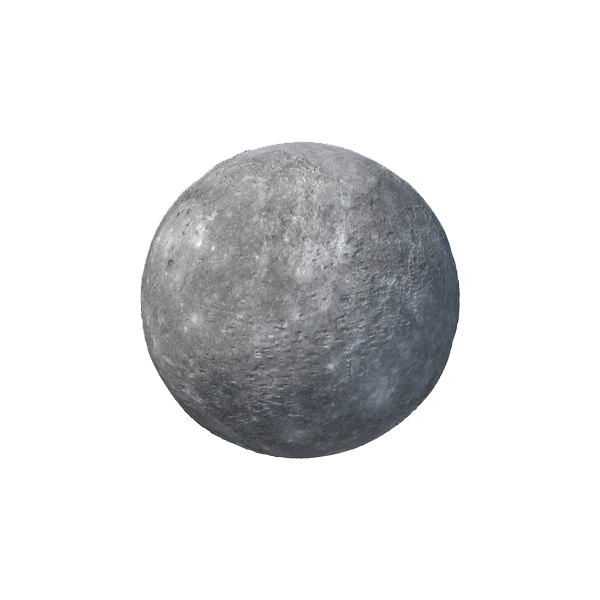
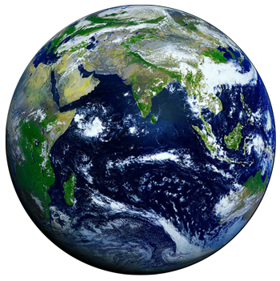
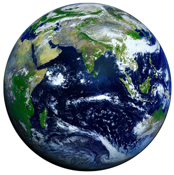

 



SOL
El Sol es la estrella en el centro del sistema solar cuya fuerza gravitacional mantiene en órbita a los planetas.
Tiene alrededor de 4500 millones de años. Produce su propia luz y calor por el proceso de fusión nuclear.
El Sol se mueve a 210 km/s dentro de la Vía Láctea y tarda 225 millones de años en completar una vuelta alrededor del centro de la galaxia.
El diámetro del Sol es de 1,4 millones de km. Sus principales componentes son el hidrógeno (92%), el helio (7,8 %) y el resto son elementos más pesados como el oxígeno, carbono, nitrógeno y neón.
MERCURIO
Mercurio es el planeta más cercano al Sol, Mercurio es uno de los planetas más densos del sistema solar.
El más pequeño de los planetas internos. Se sabe de la existencia de Mercurio desde el siglo III a.d.C.
En la mitología romana, Mercurio era el dios del comercio y los viajes, por eso se le dió este nombre al planeta, por su movimiento rápido a través del cielo.
Compuesto principalmente por hierro, sodio, magnesio, calcio, oxígeno y helio. La superficie de Mercurio presenta muchos cráteres y llanuras lisas producto del flujo de lava.

VENUS
Venus es el segundo planeta desde el Sol. Se le considera la hermana del planeta Tierra por su similitud en tamaño y masa.
Su atmósfera está compuesta por gases tóxicos (90-95% dióxido de carbono) y temperaturas superiores a los 450ºC.
Su nombre se debe a la diosa del amor y la belleza. Un detalle curioso de Venus es que rota en sentido opuesto al resto de los planetas internos, lo que le hace aparecer con los polos invertidos.
Venus es un planeta rocoso y el tercero en densidad, debido a su núcleo de níquel y hierro. Probablemente poseía una gran cantidad de agua que se evaporó debido a las altas temperaturas.

TIERRA
La Tierra es el tercer planeta desde el Sol. Es el quinto más grande en tamaño en el sistema solar.
La Tierra se formó a partir de una masa caliente y fundida que luego se enfrió y solidificó.
La Tierra es el único planeta cuyo nombre no tiene origen en la mitología griega o romana y que contiene agua en estado líquido. Posee un satélite natural, la Luna.
La Tierra es el planeta más denso del sistema solar. La superficie está recubierta en su mayoría por los océanos (70%). La atmósfera está compuesta por 78% de nitrógeno, 21% de oxígeno y el resto por argón, dióxido de carbono, metano y otros gases.

LUNA
Aunque no es un planeta es un satélite muy importante y amado por nosotros este siempre esta acompañando a la tierra.
En 1969 el primer cohete que logró alunizar y regresar a la Tierra fue el Apolo 11 en el que viajó una tripulación comandada por Neil Armstrong, el primer astronauta en pisar la Luna. Un cohete puede tardar tres días desde que sale de la Tierra hasta que llega a la Luna.
En total han viajado veinticuatro humanos y, doce de ellos, han caminado sobre la superficie lunar.
Contiene minerales, como magnesio, silicio, hierro y calcio, oxígeno y rocas basálticas.

MARTE
Marte es el cuarto planeta desde el Sol. Desde la Tierra se puede observar a Marte que luce rojo por la gran cantidad de polvo.
Marte recibe su nombre por el dios romano de la guerra. Sus dos satélites son llamados Fobos (miedo) y Deimos (pánico) como los hijos del dios griego de la guerra.
La superficie esta marcada por cráteres y fisuras, como el cañón Valles Marineris, con 8 km de profundidad y 4500 km de largo. El suelo es rico en hierro y en compuestos inestables llamados peróxidos. La atmósfera está compuesta por 95% de dióxido de carbono, 3% nitrógeno, 2% argón y menos de 0,2% oxígeno.

JÚPITER
Júpiter es el primero de los planetas gaseosos y el quinto desde el Sol. Es el más grande de los planetas del sistema solar.
Para los antiguos romanos, Júpiter era el rey de los dioses. La capa externa gaseosa es de aproximadamente 20 mil km de espesor compuesta de helio (10%) e hidrógeno (90%). En el interior del planeta, la enorme presión transforma el hidrógeno a su estado líquido metálico.
Júpiter posee al menos 63 satélites, cuatro de ellos descubiertas por Galileo en 1610, posee un sistema de anillos, como los de Saturno, pero más difuminados y claros, por lo que no son muy apreciables.
SATURNO
Saturno es el sexto planeta desde el Sol. Su característica más distintiva es el sistema de anillos que lo circunda.
Para los antiguos romanos, Saturno era el dios de la agricultura. En 1659, Christiaan Huygens reportó la presencia de los anillos y de un satélite, Titan. Titan posee una atmósfera espesa y hielo en su superficie y es más grande que el planeta Mercurio.
En total tiene 7 anillos: A, B, C, D, E, F y G. Saturno está compuesto por 75% hidrógeno y 25% helio, con mínimas cantidades de agua, metano y amonio. Sobre el polo norte se distingue una formación hexagonal
URANO
Urano es el tercero de los planetas gaseosos y el séptimo desde el Sol.Es un planeta helado, azul pálido.
Urano es el dios griego del Universo, padre del dios Saturno. Mucho de lo que conocemos de Urano es gracias a la sonda Voyager 2.
Fue descubierto por el astrónomo William Herschel en 1781. Posee un sistema de anillos difuso y por lo menos 27 satélites, de los cuales las más grandes son a Miranda, Ariel, Umbriel, Titania, Oberon, Portia, Puck y Sycorax.
A diferencia de Júpiter y Saturno, Urano está compuesto de metano, amoníaco, agua, hidrógeno y helio.

NEPTUNO
Es el octavo y último planeta del sistema solar. Es el más pequeño de los planetas gaseosos, de color azul y nubes blancas.
En la mitología romana Neptuno era el dios de los mares. La existencia de un octavo planeta fue predicho por Urbain Leverrier en Francia y John Adams en Inglaterra en 1846.
El interior de Neptuno contiene un núcleo pequeño y denso compuesto de hierro, níquel y silicatos, rodeado por un manto de agua, amoníaco y metano. La capa externa contiene hidrógeno, helio y metano. La actividad atmosférica de Neptuno es alta, con vientos que pueden alcanzar los 2000 km/h.